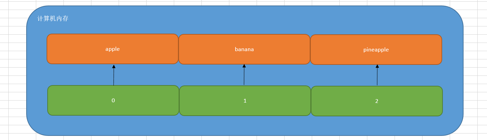
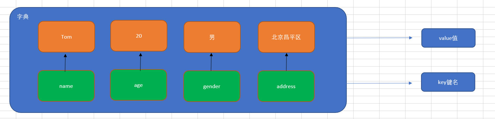

今日大纲
-
列表增删改查及其应用场景
-
元组定义与使用
-
字典的增删改查与应用
-
集合的定义与增删查
【掌握】列表及其应用场景
学习目标
- 掌握列表的定义格式及相关操作
- 掌握列表嵌套相关应用
为什么需要列表
思考：有一个人的姓名(TOM)怎么书写存储程序？
答：变量。
思考：如果一个班级100位学生，每个人的姓名都要存储，应该如何书写程序？声明100个变量吗？
答：No，我们使用列表就可以了， 列表一次可以存储多个数据。
在Python中，我们把这种数据类型称之为列表。但是在其他的编程语言中，如Java、PHP、Go等等中其被称之为数组。
列表的定义
列表序列名称 = [列表中的元素1, 列表中的元素2, 列表中的元素3, ...]
案例演示：定义一个列表，用于保存苹果、香蕉以及菠萝
list1 = ['apple', 'banana', 'pineapple'] # list列表类型支持直接打印 print(list1) # 打印列表的数据类型 print(type(list1)) # <class 'list'>
注意：列表可以一次存储多个数据且可以为不同的数据类型
列表的相关操作
列表的作用是一次性存储多个数据，程序员可以对这些数据进行的操作有：
增、删、改、查。
☆ 查操作
列表在计算机中的底层存储形式，列表和字符串一样，在计算机内存中都占用一段连续的内存地址，我们向访问列表中的每个元素，都可以通过"索引下标"的方式进行获取。

如果我们想获取列表中的某个元素，非常简单，直接使用索引下标：
list1 = ['apple', 'banana', 'pineapple'] # 获取列表中的banana print(list1[1])
查操作的相关方法：
| 编号 | 函数 | 作用 |
|---|---|---|
| 1 | index() | 指定数据所在位置的下标 |
| 2 | count() | 统计指定数据在当前列表中出现的次数 |
| 3 | in | 判断指定数据在某个列表序列，如果在返回True，否则返回False |
| 4 | not in | 判断指定数据不在某个列表序列，如果不在返回True，否则返回False |
举个栗子：
# 1、查找某个元素在列表中出现的位置（索引下标） list1 = ['apple', 'banana', 'pineapple'] print(list1.index('apple')) # 0 # print(list1.index('peach')) # 报错 # 2、count()方法：统计元素在列表中出现的次数 list2 = ['刘备', '关羽', '张飞', '关羽', '赵云'] # 统计一下关羽这个元素在列表中出现的次数 print(list2.count('关羽')) # 3、in方法和not in方法（黑名单系统） list3 = ['192.168.1.15', '10.1.1.100', '172.35.46.128'] if '10.1.1.100' in list3: print('黑名单IP，禁止访问') else: print('正常IP，访问站点信息')
☆ 增操作
| 编号 | 函数 | 作用 |
|---|---|---|
| 1 | append() | 增加指定数据到列表中 |
| 2 | extend() | 列表结尾追加数据，如果数据是一个序列，则将这个序列的数据逐一添加到列表 |
| 3 | insert() | 指定位置新增数据 |
☆ append()
append() ：在列表的尾部追加元素
names = ['孙悟空', '唐僧', '猪八戒'] # 在列表的尾部追加一个元素"沙僧" names.append('沙僧') # 打印列表 print(names)
注意：列表追加数据的时候，直接在原列表里面追加了指定数据，即修改了原列表，故列表为可变类型数据。
☆ extend()方法
列表结尾追加数据，如果数据是一个序列，则将这个序列的数据逐一添加到列表
案例：
list1 = ['Tom', 'Rose', 'Jack'] # 1、使用extend方法追加元素"Jennify" # names.extend("Jennify") # print(names) # 2、建议：使用extend方法两个列表进行合并 list2 = ['Hack', 'Jennify'] list1.extend(list2) print(list1)
总结：extend方法比较适合于两个列表进行元素的合并操作
☆ insert()方法
作用：在指定的位置增加元素
names = ['薛宝钗', '林黛玉'] # 在薛宝钗和林黛玉之间，插入一个新元素"贾宝玉" names.insert(1, '贾宝玉') print(names)
☆ 删操作
| 编号 | 函数 | 作用 |
|---|---|---|
| 1 | del 列表[索引] | 删除列表中的某个元素 |
| 2 | pop() | 删除指定下标的数据(默认为最后一个)，并返回该数据 |
| 3 | remove() | 移除列表中某个数据的第一个匹配项。 |
☆ del删除指定的列表元素
基本语法：
names = ['Tom', 'Rose', 'Jack', 'Jennify'] # 删除Rose del names[1] # 打印列表 print(names)
☆ pop()方法
作用：删除指定下标的元素，如果不填写下标，默认删除最后一个。其返回结果：就是删除的这个元素
names = ['貂蝉', '吕布', '董卓'] del_name = names.pop() # 或 # del_name = names.pop(1) print(del_name) print(names)
☆ remove()方法
作用：删除匹配的元素
fruit = ['apple', 'banana', 'pineapple'] fruit.remove('banana') print(fruit)
改操作
| 编号 | 函数 | 作用 |
|---|---|---|
| 1 | 列表[索引] = 修改后的值 | 修改列表中的某个元素 |
| 2 | reverse() | 将数据序列进行倒叙排列 |
| 3 | sort() | 对列表序列进行排序 |
list1 = ['貂蝉', '大乔', '小乔', '八戒'] # 修改列表中的元素 list1[3] = '周瑜' print(list1) list2 = [1, 2, 3, 4, 5, 6] list2.reverse() print(list2) list3 = [10, 50, 20, 30, 1] list3.sort() # 升序(从小到大) # 或 # list3.sort(reverse=True) # 降序(从大到小) print(list3)
列表的循环遍历
什么是循环遍历？答：循环遍历就是使用while或for循环对列表中的每个数据进行打印输出
while循环：
list1 = ['貂蝉', '大乔', '小乔'] # 定义计数器 i = 0 # 编写循环条件 while i < len(list1): print(list1[i]) # 更新计数器 i += 1
for循环（个人比较推荐）：
list1 = ['貂蝉', '大乔', '小乔'] for i in list1: print(i)
列表的嵌套
列表的嵌套：列表中又有一个列表，我们把这种情况就称之为列表嵌套
在其他编程语言中，称之为叫做二维数组或多维数组
应用场景：要存储班级一、二、三 => 三个班级学生姓名，且每个班级的学生姓名在一个列表。
classes = ['第一个班级','第二个班级','第三个班级'] 一班：['张三', '李四'] 二班：['王五', '赵六'] 三班：['田七', '钱八'] 把班级和学员信息合并在一起，组成一个嵌套列表 students = [['张三', '李四'],['王五', '赵六'],['田七', '钱八']] students = [x,y,z] students[0] == ['张三', '李四'] students[0][1]
问题：嵌套后的列表，我们应该如何访问呢？
# 访问李四 print(students[0][1]) # 嵌套列表进行遍历，获取每个班级的学员信息 for i in students: print(i)
列表案例
案例需求
求相邻元素最大值.编写一个程序，求一个正整数数组中每对相邻元素的最大值。 例如, 输入: [7 8 9 5 6 7 2 3] 输出: [8, 9, 9, 6, 7, 7, 3]
实现思路
①定义一个正整数数组
②初始化一个空列表用于存储相邻元素的最大值
③使用 for 循环遍历数组中的每对相邻元素
④获取当前元素和下一个元素
⑤计算当前元素和下一个元素的最大值
⑥将最大值添加到 max_values 列表中
⑦打印相邻元素的最大值列表
代码实现
# 1. 定义一个正整数数组 numbers = [7, 8, 9, 5, 6, 7, 2, 3] # 2. 初始化一个空列表用于存储相邻元素的最大值 max_values = [] # 3. 使用 for 循环遍历数组中的每对相邻元素 for i in range(len(numbers) - 1): # 4. 获取当前元素和下一个元素 current = numbers[i] next_element = numbers[i + 1] # 5. 计算当前元素和下一个元素的最大值 max_value = max(current, next_element) # 6. 将最大值添加到 max_values 列表中 max_values.append(max_value) # 7. 打印相邻元素的最大值列表 print(f"相邻元素的最大值是: {max_values}")
巩固练习
给定列表original_list其中包含1, 2, 2, 3, 4, 4, 5, 6, 6, 7元素，现在通过编写程序对列表中的数据进行去重
# 1.原始列表 original_list = [1, 2, 2, 3, 4, 4, 5, 6, 6, 7] # 2.用于存储去重后的列表 unique_list = [] # 3.遍历原始列表 for item in original_list: # 4.如果元素不在去重后的列表中，则添加 if item not in unique_list: unique_list.append(item) # 5.输出去重后的列表 print("去重后的列表:", unique_list)
总结
Q1: 什么是列表?
- Python中的一种容器类型, 可以同时存储多个元素.
Q2: 列表常用的函数有哪些?
- 查: index(), count(), in, not in
- 增: append(), extend(), insert()
- 删: del, pop(), remove()
- 改: 列表名[索引], reverse(), sort()
【掌握】元组的定义与使用
学习目标
- 理解元组的定义格式及应用场景
- 掌握元组的常用函数
为什么需要元组
思考：如果想要存储多个数据，但是这些数据是不能修改的数据，怎么做？
答：列表？列表可以一次性存储多个数据，但是列表中的数据允许更改。
num_list = [10, 20, 30] num_list[0] = 100
那这种情况下，我们想要存储多个数据且数据不允许更改，应该怎么办呢？
答：使用元组，元组可以存储多个数据且元组内的数据是不能修改的。
元组的定义
元组特点：定义元组使用小括号，且使用逗号隔开各个数据，数据可以是不同的数据类型。
基本语法：
# 多个数据元组 tuple1 = (10, 20, 30) # 单个数据元组 tuple2 = (10,)
注意：如果定义的元组只有一个数据，那么这个数据后面也要添加逗号，否则数据类型为唯一的这个数据的数据类型。
元组的相关操作方法
由于元组中的数据不允许直接修改，所以其操作方法大部分为查询方法。
| 编号 | 函数 | 作用 |
|---|---|---|
| 1 | 元组[索引] | 根据索引下标查找元素 |
| 2 | index() | 查找某个数据，如果数据存在返回对应的下标，否则报错，语法和列表、字符串的index方法相同 |
| 3 | count() | 统计某个数据在当前元组出现的次数 |
| 4 | len() | 统计元组中数据的个数 |
案例1：访问元组中的某个元素
nums = (10, 20, 30) print(nums[2])
案例2：查找某个元素在元组中出现的位置，存在则返回索引下标，不存在则直接报错
nums = (10, 20, 30) print(nums.index(20))
案例3：统计某个元素在元组中出现的次数
nums = (10, 20, 30, 50, 30) print(nums.count(30))
案例4：len()方法主要就是求数据序列的长度，字符串、列表、元组
nums = (10, 20, 30, 50, 30) print(len(nums))
nums = (10, 20, 30, 50, 30) print(len(nums))
元组案例
案例需求
编写一个程序来提取嵌套元组中的唯一元素。 例如: 在嵌套元组((1,2,3),(2,4,6),(2,3,5))中, 2重复出现了3次，3重复出现了2次，但我们的输出列表只会包含2、3一次。 即：[1, 2, 3, 4, 5, 6]
实现思路
①定义一个嵌套元组
②使用循环方式遍历元组中的每个子元组
③嵌套循环遍历子元组中的每个元素
④将元素添加到集合中，集合天然去重
⑤将集合转化为列表
代码实现
# 1. 定义一个嵌套元组 nested_tuple = ((1, 2, 3), (2, 4, 6), (2, 3, 5)) # 2. 初始化一个空集合用于存储唯一元素 unique_elements = set() # 3. 使用 for 循环遍历嵌套元组中的每个子元组 for sub_tuple in nested_tuple: # 4. 使用 for 循环遍历子元组中的每个元素 for element in sub_tuple: # 5. 将元素添加到集合中（集合会自动去重） unique_elements.add(element) # 6. 将集合转换为列表 unique_list = list(unique_elements) # 7. 打印唯一元素列表 print(f"嵌套元组中的唯一元素是: {unique_list}")
巩固练习
给定一个元组my_tuple，里面包含1, 2, 3, 4, 5, 6, 7, 8, 9元素，要求统计数字元组中, 奇数的个数
# 1.定义一个数字元组 my_tuple = (1, 2, 3, 4, 5, 6, 7, 8, 9) # 2.初始化奇数计数器 odd_count = 0 # 3.遍历元组中的每个元素 for num in my_tuple: # 4.检查元素是否为奇数 if num % 2 != 0: odd_count += 1 # 5.输出奇数的个数 print("元组中奇数的个数:", odd_count)
总结
Q1: 元组的特点
- 可以存储多个元素, 但是元素值不可变.
Q2: 元组的常用函数
- index(), count(), len()
【掌握】字典的定义与使用
学习目标
- 掌握字典定义格式及相关函数
- 掌握字典在实际开发中的应用场景
为什么需要字典(dict)
思考1：比如我们要存储一个人的信息，姓名：Tom，年龄：20周岁，性别：男，家庭住址：北京市昌平区，如何快速存储。
person = ['Tom', 20, '男', '北京市昌平区']
思考2：在日常生活中，姓名、年龄以及性别同属于一个人的基本特征。但是如果使用列表对其进行存储，则分散为3个元素，这显然不合逻辑。我们有没有办法，将其保存在同一个元素中，姓名、年龄以及性别都作为这个元素的3个属性。
答：使用Python中的字典
Python中字典(dict)的概念
特点：
① 符号为大括号（花括号） => {}
② 数据为键值对形式出现 => {key:value}，key：键名，value：值，在同一个字典中，key必须是唯一（类似于索引下标）
③ 各个键值对之间用逗号隔开

在字典中，键名除了可以使用字符串的形式，还可以使用数值的形式来进行表示
定义：
# 有数据字典 dict1 = {'name': 'Tom', 'age': 20, 'gender': '男'} # 空字典 dict2 = {} dict3 = dict()
在Python代码中，字典中的key必须使用引号引起来
字典的增操作（重点）
基本语法：
字典名称[key] = value 注：如果key存在则修改这个key对应的值；如果key不存在则新增此键值对。
案例：定义一个空字典，然后添加name、age以及address这样的3个key
# 1、定义一个空字典 person = {} # 2、向字典中添加数据 person['name'] = '刘备' person['age'] = 40 person['address'] = '蜀中' # 3、使用print方法打印person字典 print(person)
注意：列表、字典为可变类型
字典的删操作
① del 字典名称[key]：删除指定元素
# 1、定义一个有数据的字典 person = {'name':'王大锤', 'age':28, 'gender':'male', 'address':'北京市海淀区'} # 2、删除字典中的某个元素（如gender） del person['gender'] # 3、打印字典 print(person)
② clear()方法：清空字典中的所有key
# 1、定义一个有数据的字典 person = {'name':'王大锤', 'age':28, 'gender':'male', 'address':'北京市海淀区'} # 2、使用clear()方法清空字典 person.clear() # 3、打印字典 print(person)
字典的改操作
基本语法：
字典名称[key] = value 注：如果key存在则修改这个key对应的值；如果key不存在则新增此键值对。
案例：定义一个字典，里面有name、age以及address，修改address这个key的value值
# 1、定义字典 person = {'name':'孙悟空', 'age': 600, 'address':'花果山'} # 2、修改字典中的数据（address） person['address'] = '东土大唐' # 3、打印字典 print(person)
字典的查操作
① 查询方法：使用具体的某个key查询数据，如果未找到，则直接报错。
字典序列[key]
② 字典的相关查询方法
| 编号 | 函数 | 作用 |
|---|---|---|
| 1 | keys() | 以列表返回一个字典所有的键 |
| 2 | values() | 以列表返回字典中的所有值 |
| 3 | items() | 以列表返回可遍历的(键, 值) 元组数据 |
案例1：提取person字典中的所有key
# 1、定义一个字典 person = {'name':'貂蝉', 'age':18, 'mobile':'13765022249'} # 2、提取字典中的name、age以及mobile属性 print(person.keys())
案例2：提取person字典中的所有value值
# 1、定义一个字典 person = {'name':'貂蝉', 'age':18, 'mobile':'13765022249'} # 2、提取字典中的貂蝉、18以及13765022249号码 print(person.values())
案例3：使用items()方法提取数据
# 1、定义一个字典 person = {'name':'貂蝉', 'age':18, 'mobile':'13765022249'} # 2、调用items方法获取数据，dict_items([('name', '貂蝉'), ('age', 18), ('mobile', '13765022249')]) # print(person.items()) # 3、结合for循环对字典中的数据进行遍历 for key, value in person.items(): print(f'{key}：{value}')
字典案例
案例需求
给定一个字符串my_string，现在要求统计每个字符出现的次数
实现思路
①定义一个字符串
②初始化空字典，来存储对应字符和出现次数
③循环遍历字符串中每个字符
④如果字符串已经在字典中，计数加1，如果不在，初始化计数1
⑤输出统计每个字符出现的次数
代码实现
# 1.定义一个字符串 my_string = "hello world" # 2.初始化一个空字典来存储字符及其出现的次数 char_count = {} # 3.遍历字符串中的每个字符 for char in my_string: # 4.如果字符已经在字典中，计数加一 if char in char_count: char_count[char] += 1 # 5.如果字符不在字典中，初始化计数为1 else: char_count[char] = 1 # 6.输出每个字符出现的次数 for char, count in char_count.items(): print(f"字符 '{char}' 出现了 {count} 次")
巩固练习
需求: 编写一个程序将字符串转换为字典例如:输入: '5=Five 6=Six 7=Seven' 输出: {'5': 'Five', '6': 'Six', '7': 'Seven'}
# 1. 从输入获取一个字符串 input_string = input("请输入一个字符串: ") # 2. 初始化一个空字典用于存储转换后的键值对 result_dict = {} # 3. 使用 split() 方法将字符串按空格分割成多个键值对字符串 key_value_pairs = input_string.split() # 4. 使用 for 循环遍历每个键值对字符串 for pair in key_value_pairs: # 5. 使用 split('=') 方法将键值对字符串按 '=' 分割成键和值 key, value = pair.split('=') # 6. 将键和值添加到字典中 result_dict[key] = value # 7. 打印转换后的字典 print(f"转换后的字典是: {result_dict}")
总结
Q1: 字典的特点
- 存储的是键值对的元素
- 键具有唯一性, 值可以重复
Q2:字典的常用函数
- clear(), keys(), values(), items()
【熟悉】集合的定义与使用
学习目标
- 理解集合的定义格式及特点
什么是集合
集合（set）是一个无序的不重复元素序列。
① 天生去重
② 无序
集合的定义
在Python中，我们可以使用一对花括号{}或者set()方法来定义集合，但是如果你定义的集合是一个空集合，则只能使用set()方法。
# 定义一个集合 s1 = {10, 20, 30, 40, 50} print(s1) print(type(s1)) # 定义一个集合：集合中存在相同的数据 s2 = {'刘备', '曹操', '孙权', '曹操'} print(s2) print(type(s1)) # 定义空集合 s3 = {} s4 = set() print(type(s3)) # <class 'dict'> print(type(s4)) # <class 'set'>
集合操作的相关方法（增删查）
☆ 集合的增操作
add()方法：向集合中增加一个元素（单一）
students = set() students.add('李哲') students.add('刘毅') print(students)
☆ 集合的删操作
remove()方法：删除集合中的指定数据，如果数据不存在则报错。
# 1、定义一个集合 products = {'萝卜', '白菜', '水蜜桃', '奥利奥', '西红柿', '凤梨'} # 2、使用remove方法删除白菜这个元素 products.remove('白菜') print(products)
☆ 集合中的查操作
① in ：判断某个元素是否在集合中，如果在，则返回True，否则返回False
② not in ：判断某个元素不在集合中，如果不在，则返回True，否则返回False
# 定义一个set集合 s1 = {'刘帅', '英标', '高源'} # 判断刘帅是否在s1集合中 if '刘帅' in s1: print('刘帅在s1集合中') else: print('刘帅没有出现在s1集合中')
③ 集合的遍历操作
for i in 集合: print(i)
集合案例
需求
编写一个程序来统计缺失的数字并返回它们的总和。缺失的数字是指给定列表中两个极端（最大和最小数字）之间没有出现的数字。 例如，在列表[2, 5, 3, 7, 5, 7]中，两个极端（即2和7）之间缺失的数字是4和6。
# 1. 从输入获取一个整数列表 numbers = [2, 5, 3, 7, 5, 7] # 2. 找到列表中的最小值 min_num = min(numbers) # 3. 找到列表中的最大值 max_num = max(numbers) # 4. 初始化一个集合用于存储列表中的所有数字 number_set = set(numbers) # 5. 初始化一个变量用于存储缺失数字的总和 missing_sum = 0 # 6. 遍历从最小值到最大值之间的每个数字 for num in range(min_num + 1, max_num): # 7. 检查数字是否不在集合中 if num not in number_set: # 8. 如果不在，将数字添加到缺失数字的总和中 missing_sum += num # 9. 打印缺失数字的总和 print(f"缺失的数字之和是: {missing_sum}")
总结
Q1: 集合的特点
- 无序, 唯一
Q2: 集合的应用场景
- 适用于 元素的去重 情况
作业
作业一：集合中奇数和
给定一个集合numbers，集合中包含1, 2, 3, 4, 5, 6, 7, 8, 9, 10, 11, 12, 13, 14, 15元素，求该集合中所有奇数的和是多少
# 1. 定义一个集合记录一些整数 numbers = {1, 2, 3, 4, 5, 6, 7, 8, 9, 10, 11, 12, 13, 14, 15} # 2. 初始化一个变量用于存储奇数的和 odd_sum = 0 # 3. 遍历集合中的每个数字 for num in numbers: # 4. 检查数字是否为奇数 if num % 2 != 0: # 5. 如果是奇数，将其加到奇数的和中 odd_sum += num # 6. 打印所有奇数的和 print(f"集合中所有奇数的和是: {odd_sum}")
作业二：约瑟夫环
需求：有一天你穿越到了古代, 碰巧约到古代的皇帝在杀人, 有两个消息, 1个好消息, 1个坏消息.坏消息: 你也在此列. 好消息: 你可以选择自己占的位置.规则: 让所有的人从1开始不断数数, 每次累加1, 只要数到3的倍数, 就干掉这个人, 直至剩下最后1个人, 他站的位置就是: 幸运数字. 参考答案: 10个人玩游戏 -> 幸运数字: 4
# 思路1: 传统编程思路, 业务逻辑实现. # 1. 定义变量, 记录参与游戏的人数, 并接收. n = int(input('请录入参与游戏的人数: ')) # 2. 生成列表. num_list = [i for i in range(1, n + 1)] # 3. 定义变量, 分别记录: 当前数到的数字, 当前元素的索引. current_num = 0 # 当前数到的数字 i = 0 # 当前元素的索引 # 4. 循环, 直到列表中只剩下1个元素. while len(num_list) != 1: # 5. 先数 数字. current_num += 1 # 6. 判断, 当前数字是3的倍数, 就删掉这个元素. if current_num % 3 == 0: num_list.pop(i) # 细节1: 因为删除元素后, 后续元素的索引会-1, 所以: i也要同步-1 i -= 1 # 7. 走到这里, 说明上个人已经报过数字了, 我们继续游戏即可. i += 1 # 8. 做越界处理. if i >= len(num_list): # 细节2: 走到这里, 说明本轮结束, (开启下轮报数)从头开始报数即可. i = 0 # 9. 走到这里, 说明幸运数字已经找到了, 返回即可. print(f'{n}人参与游戏, 幸运数字是: {num_list[0]}') print('-' * 22)